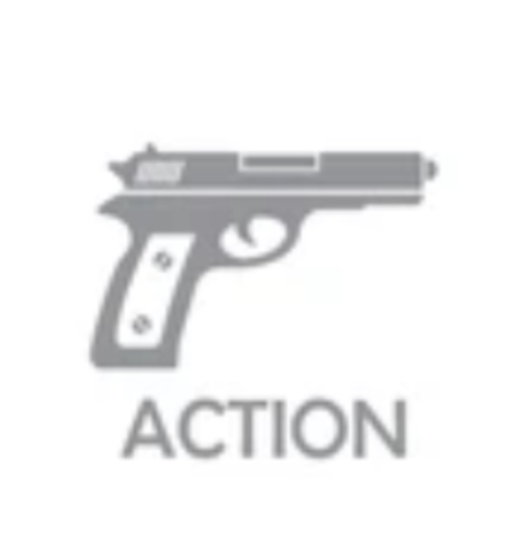
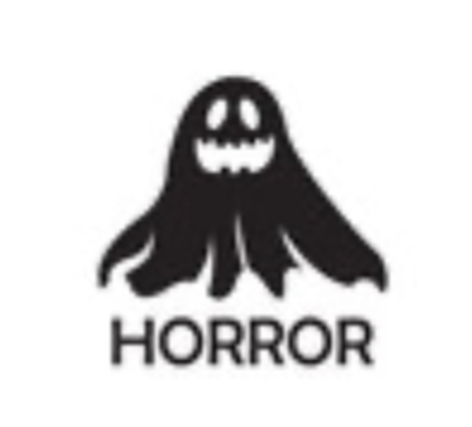
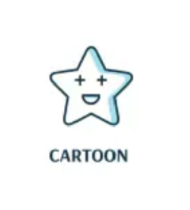
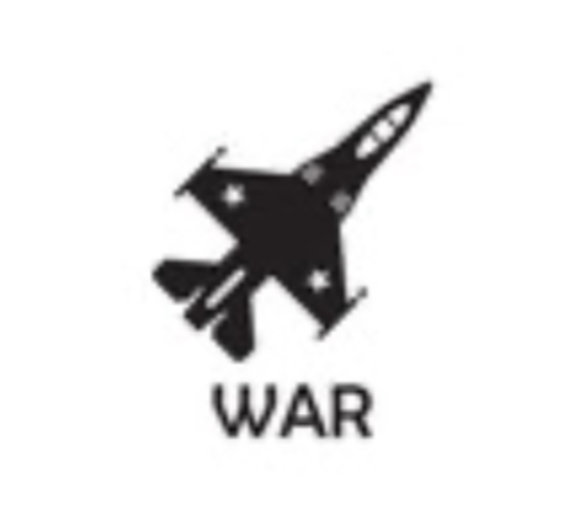

genres

actie
Actiefilms zijn een genre films waarin de actie de belangrijkste rol speelt. Actie bestaat uit vechtscènes, achtervolgingen en geweld. Ook komen er vaak explosies, schietpartijen en andere grote acties voor. In een actiefilm neemt een held het meetsal op tegen een schurk, of gaat de hoofdpersoon een missie volgen

Horror
Horror is een genre van verhalen waarbij het de bedoeling is de lezer of de toeschouwer als vorm van amusement angst aan te jagen. Dit kan door bijvoorbeeld angstige situaties of wezens ten tonele te voeren, dit genre heeft veel schrik momenten, denk bij dit genre aan films als: "It" of "the exorcist". Erg spannend dus!

cartoon
Een cartoon is altijd getekend en niet realistisch, ook is het expres grappig gemaakt en is dus daarom leuk oor zowel jong als oud. sommige cartoons hebben alleen soundeffects en geen stemmen, dat is zo zodat doven mensen er ook van kunnen mee genieten zonder constant de ondertiteling te lezenwestern
western is een genre dat in films, tv-series, boeken en schilderkunst wordt verbeeld met een idealisering van het landelijke leven omstreeks de tweede helft van de 19e eeuw in het zogenaamde 'Wilde Westen', het westelijke deel van de Verenigde Staten. vaak komt in dit genre een cowboy of sherrif voor, en de bekende "death bushes"
